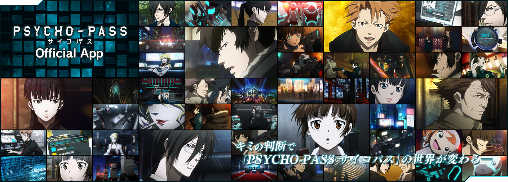

[2015/03/16 am4:15更新]
Androidにて、アプリのアップデートを行うとユーザーデータを正常に引き継げない(初期化されてしまう)不具合が発生いたしました。
本不具合の補填といたしまして、2015年3月31日までにAndroidによる新規登録をおこなったユーザー様には、PORTALモードで全てのキセカエ開放が可能なポイント1250ptを付与させていただきます。
また、旧バージョン(1.0.10以前)のイベントクリア履歴、および残存ポイントの復旧をご希望のユーザー様に関しましては、問い合わせフォーム「問い合わせカテゴリ」＞「データ引き継ぎについて」を選択して頂き、下記項目を記入の上、お問い合わせくださいますようお願いいたします。
1.新規登録前のニックネーム
2.新規登録前のニックネームローマ字表記
3.新規登録前のID
4.最後に選択されたキセカエテーマ
5.最後にクリアされたイベント名とクリア日時
6.所持ポイント数
7.新規アカウントのニックネーム
8.新規アカウントのID
ご不便をおかけいたしますが、新バージョン(2.0.1以降)にて新規登録していただいた後、お楽しみください。
